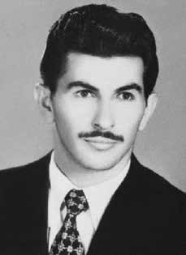

Orlando
Momente
CIRCUNSTÂNCIAS DA MORTE
O Relatório Arroyo descreve que, após o episódio de 25 de dezembro de 1973, conhecido como o “chafurdo do natal”, com a morte de membros da Comissão Militar, os guerrilheiros decidiram dividir-se em cinco grupos. Um deles estava sob comando de Landim, codinome de Orlando.
No dia 30 de dezembro de 1973 à tarde, quando todos os grupos já haviam tomado seus destinos, ouviram-se tiros de metralhadoras no caminho tomado por Osvaldo Orlando da Costa (Osvaldão) ou Orlando Momente. Não há mais informações sobre o que poderia ter ocorrido. As informações contidas no “Arquivo Curió”, listado na publicação “Documentos do SNI: Os mortos e Desaparecidos na Guerrilha do Araguaia” corroboram o desaparecimento de Orlando referido por Ângelo Arroyo, como preso e executado em 30 de dezembro de 1973.
Em contrapartida, o Relatório do CIE, de 1975, registra que “Landinho” foi morto em 25 de janeiro de 1974 . No processo de reparação movido junto à CEMDP encontra-se uma declaração de Criméia Alice Schmidt de Almeida sobre sua entrevista, de 1993, com Joana Vieira de Almeida, esposa de Luiz Vieira, camponês também desaparecido na Guerrilha do Araguaia. Na ocasião, esta confirmou ter encontrado, no ano de 1974, no sítio da Paxiba, próximo a São Domingos do Araguaia (PA), debaixo de um pé de sapucaia, restos de uma ossada semi-enterrada (crânio e fêmur) que seriam de Landim.
Joana Vieira ainda afirmou que pelo estado de conservação dos restos mortais, como evidência de vestígios de carne, o corpo teria sido enterrado recentemente. A identificação de Orlando Momente pela entrevistada se pautou na descoberta do chapéu característico que ele usava, de couro de quati curtido e com cauda, ao lado da ossada.
Contrariando todas as demais versões, em depoimento prestado à Comissão Nacional da Verdade, em 20 de março de 2014, o segundo tenente da Polícia Militar de Goiás, João Alves de Sousa, apontou que Orlando morreu no “Chafurdo de Natal”, em 25 de dezembro de 1973.
The Arroyo Report describes that, after the episode of December 25, 1973, known as the “Christmas wallow”, with the death of members of the Military Commission, the guerrillas decided to divide themselves into five groups. One of them was under the command of Landim, codename Orlando.
On December 30, 1973, in the afternoon, when all the groups had already reached their destinations, machine gun shots were heard on the path taken by Osvaldo Orlando da Costa (Osvaldão) or Orlando Momente. There is no further information about what could have happened. The information contained in the “Curió Archive”, listed in the publication “SNI Documents: The dead and missing in the Araguaia Guerrilla” corroborates the disappearance of Orlando referred to by Ângelo Arroyo, as arrested and executed on December 30, 1973.
On the other hand, the CIE Report, from 1975, records that “Landinho” was killed on January 25, 1974. In the reparation process filed with CEMDP there is a statement by Criméia Alice Schmidt de Almeida about her 1993 interview with Joana Vieira de Almeida, wife of Luiz Vieira, a peasant who also disappeared in the Araguaia Guerrilla. At the time, she confirmed that she had found, in 1974, at the Paxiba site, near São Domingos do Araguaia (PA), under a sapucaia tree, the remains of a half-buried bone (skull and femur) believed to be Landim's.
Joana Vieira also stated that due to the state of conservation of the remains, as evidence of traces of flesh, the body would have been buried recently. The interviewee's identification of Orlando Momente was based on the discovery of the characteristic hat he wore, made of tanned coati leather and with a tail, next to the bone.
Contrary to all other versions, in a statement given to the National Truth Commission, on March 20, 2014, the second lieutenant of the Military Police of Goiás, João Alves de Sousa, pointed out that Orlando died in the “Walking of Natal”, on December 25, 1973.
El Informe Arroyo describe que, luego del episodio del 25 de diciembre de 1973, conocido como el “revolcadero de Navidad”, con la muerte de miembros de la Comisión Militar, la guerrilla decidió dividirse en cinco grupos. Uno de ellos estaba bajo el mando de Landim, cuyo nombre en clave era Orlando.
El 30 de diciembre de 1973, por la tarde, cuando todos los grupos ya habían llegado a su destino, se escucharon disparos de ametralladora en el camino recorrido por Osvaldo Orlando da Costa (Osvaldão) o Orlando Momente. No hay más información sobre lo que pudo haber pasado. La información contenida en el “Archivo Curió”, recogida en la publicación “Documentos del SNI: Los muertos y desaparecidos en la Guerrilla de Araguaia” corrobora la desaparición de Orlando referida por Ângelo Arroyo, detenido y ejecutado el 30 de diciembre de 1973.
Por otro lado, el Informe CIE, de 1975, registra que “Landinho” fue asesinado el 25 de enero de 1974. En el proceso de reparación presentado ante el CEMDP hay una declaración de Criméia Alice Schmidt de Almeida sobre su entrevista de 1993 con Joana Vieira de Almeida, esposa de Luiz Vieira, campesino también desaparecido en la Guerrilla de Araguaia. En su momento, confirmó haber encontrado, en 1974, en el sitio de Paxiba, cerca de São Domingos do Araguaia (PA), bajo un árbol de sapucaia, los restos de un hueso semienterrado (cráneo y fémur) que se cree que pertenece a Landim.
Joana Vieira también afirmó que debido al estado de conservación de los restos, como evidencia de restos de carne, el cuerpo habría sido enterrado recientemente. La identificación de Orlando Momente por parte del entrevistado se basó en el hallazgo del característico sombrero que llevaba, elaborado en cuero de coatí curtido y con cola, junto al hueso.
Contrariamente a todas las demás versiones, en declaración dada a la Comisión Nacional de la Verdad, el 20 de marzo de 2014, el subteniente de la Policía Militar de Goiás, João Alves de Sousa, señaló que Orlando murió en el “Paseo de Natal”, el 25 de diciembre de 1973.